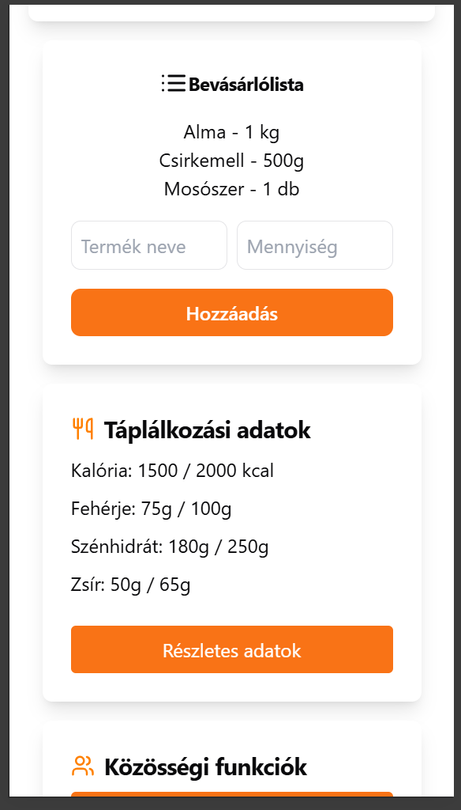
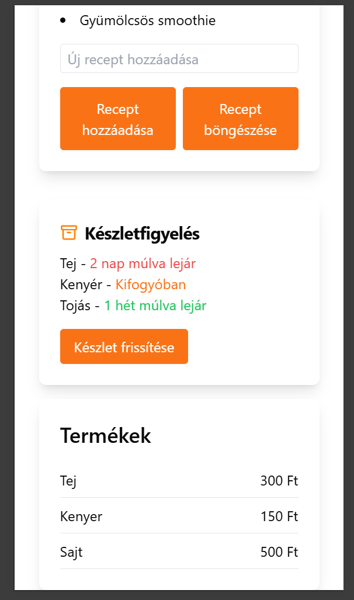
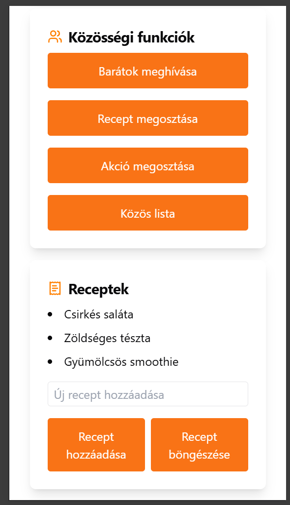

SmartCart Felhasználói Dokumentáció
Tartalomjegyzék
Bejelentkezési és regisztrációs képernyők
A SmartCart alkalmazás elindítása után a login panel felületét látják. Itt regisztrálhatnak meguknak felhasználót, vagy bejelentkezhetnek egy már meglévőbe.
Bejelentkezés
- Bejelentkezési panel – A "Bejelentkezés" fül kiválasztása után a felhasználók megadhatják:
- Felhasználónév – Írják be a regisztrációkor megadott felhasználónevüket.
- Jelszó – Adják meg a fiókhoz tartozó jelszót.
- A szükséges adatok megadása után a "Bejelentkezés" gomb megnyomásával a felhasználók hozzáférhetnek az alkalmazás összes funkciójához.
Regisztráció
- Regisztrációs panel – Az "Regisztráció" fül kiválasztásával a felhasználók új fiókot hozhatnak létre. A következő adatokat szükséges megadni:
- Vezetéknév – A felhasználó vezetékneve.
- Keresztnév – A felhasználó keresztneve.
- Felhasználónév – Az egyedi felhasználónév, amit a bejelentkezéshez használnak majd.
- Jelszó – A fiókhoz tartozó biztonságos jelszó.
- Az összes mező kitöltése után a "Regisztráció" gomb megnyomásával a felhasználók új fiókot hozhatnak létre, és beléphetnek az alkalmazásba.
Fő funkciók
A bevásárlólista funkció lehetővé teszi a felhasználók számára, hogy listát készítsenek a vásárolni kívánt termékekről. Az alábbi lehetőségek állnak rendelkezésre:
- Termék neve és mennyisége – A felhasználók megadhatják a termék nevét és mennyiségét, majd a "Hozzáadás" gombbal felvehetik a listára.
- Termékek megjelenítése – A listán lévő termékek mennyiséggel együtt jelennek meg.
Táplálkozási adatok
A SmartCart táplálkozási adatokat is biztosít a felhasználók számára:
- Kalória és tápanyag tartalom – A felhasználók nyomon követhetik a napi kalória-, fehérje-, szénhidrát- és zsírbevitelüket.
- Részletes adatok – A "Részletes adatok" gomb megnyomásával a felhasználók részletes információkat kapnak az egyes tápanyagok arányairól.

Helymeghatározás alapú funkciók
A helymeghatározás alapú funkciók segítségével a SmartCart alkalmazás személyre szabott ajánlatokat és navigációt biztosít a felhasználók számára:
- Bolti ajánlatok megjelenítése – Az alkalmazás megmutatja a felhasználók közelében lévő boltok aktuális akcióit, figyelembe véve a helymeghatározás adatait.
- Üzletek elérhetőségei és térképnézet – Az alkalmazás térképet és műholdas nézetet kínál, hogy a felhasználók könnyen tájékozódhassanak az üzletek pontos helyéről.

Készletfigyelés
A készletfigyelés funkcióval a felhasználók nyomon követhetik az otthoni termékek készletét és azok lejárati idejét:
- Lejárati figyelmeztetés – A rendszer figyelmeztetést ad, ha egy termék hamarosan lejár, például "2 nap múlva lejár" jelzéssel, piros színnel kiemelve.
- Kifogyási állapot – Ha egy termék kifogyóban van, a rendszer "Kifogyóban" státusszal jelzi, szintén kiemelve.
- Készlet frissítése – A "Készlet frissítése" gomb segítségével a felhasználók manuálisan frissíthetik a készlet állapotát.

Termékek
A Termékek funkció lehetővé teszi a felhasználók számára, hogy gyorsan áttekintsék az egyes termékek árát:
- Terméklista – A felhasználók láthatják az otthon elérhető termékek nevét és árát egy egyszerű listában, például "Tej – 300 Ft", "Kenyér – 150 Ft", stb.
- Költséghatékony vásárlás – Az aktuális árak megjelenítésével a felhasználók könnyen átláthatják, mely termékek vannak raktáron, és milyen költségekkel kell számolniuk a bevásárlás során.
Közösségi funkciók
A SmartCart közösségi funkciói lehetővé teszik a felhasználók számára, hogy megoszthassák vásárlási és táplálkozási adataikat barátaikkal:
- Barátok meghívása – A felhasználók meghívhatják barátaikat az alkalmazás használatára.
- Recept megosztása – Lehetőség van saját receptek megosztására.
- Akció megosztása – Az aktuális akciókat is megoszthatják ismerőseikkel.
- Közös lista – A közös lista használata lehetővé teszi a közös bevásárlólista kezelését egy háztartáson belül.
Receptek
A SmartCart alkalmazás recept funkciójával a felhasználók létrehozhatnak és megoszthatnak saját receptjeiket:
- Új recept hozzáadása – A felhasználók új recepteket vihetnek fel az alkalmazásba manuálisan.
- Recept böngészése – A felhasználók böngészhetnek a már megosztott recepek között, vagy interneteléréssel újakat kereshetnek.
